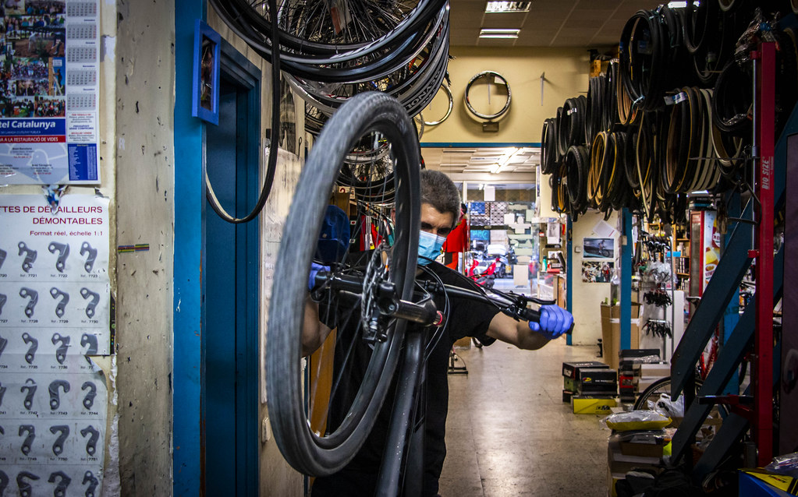
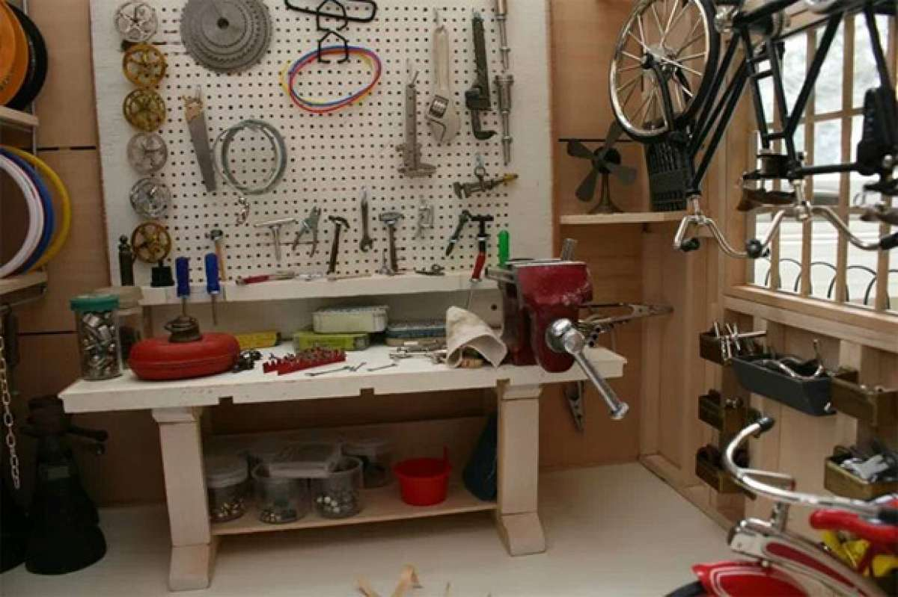

🔧 Taller Mecánico y Mantenimiento
En nuestro taller especializado ponemos a punto tu bicicleta con la rapidez necesaria para que puedas disfrutar de tus rutas y salidas en familia.
¿Qué nos diferencia de otros talleres de bicicletas?
- Rapidez y atención inmediata: Realizamos operaciones rápidas como la sustitución de cámaras y cubiertas, cambios de cadena o ajustes de frenos en el acto, mientras esperas en la tienda. Para intervenciones de mayor envergadura o puestas a punto generales, mantenemos plazos de entrega reducidos, generalmente en el mismo día o entre 1 y 3 días laborables, según la reparación.
- Transparencia total y comunicación directa: Creemos en un trato honesto y sin sorpresas. Todos nuestros presupuestos son gratuitos y sin compromiso. Además, realizamos el diagnóstico para bicicletas eléctricas sin coste alguno. Rosendo te llamará personalmente por teléfono para informarte del estado de tu bicicleta y confirmar el presupuesto exacto antes de realizar cualquier trabajo en el taller.
- Puestas a punto y mantenimiento preventivo: Ofrecemos planes de revisión integral adaptados al uso de tu bicicleta. Nuestra puesta a punto básica, desde 25 €, abarca el ajuste de frenos, la sincronización de cambios, la verificación de la presión de inflado y el engrase general de la transmisión. La puesta a punto completa, por 45 €, añade una limpieza profunda y el centrado de ambas ruedas.

